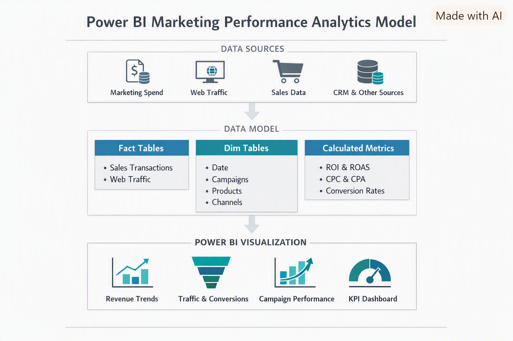

End‑to‑end Power BI analytics for marketing performance.
A complete Power BI solution analyzing spend, traffic, and revenue across multiple marketing channels from May–December 2025, designed for executive decision‑making.
← Back to Portfolio
VicBol Performance Analytics is a complete Power BI project analyzing marketing performance across spend, traffic, and revenue. The dashboard provides executives with a unified view of channel effectiveness, ROI, and customer engagement trends.
VicBol’s marketing data was siloed across multiple sources, making it difficult to:
Reporting was inconsistent and lacked a single source of truth.
I engineered a complete Power BI solution with:
The dashboard provides a clear, unified view of marketing effectiveness.
The solution uses a star-schema model:
Tools used:
The VicBol Performance Analytics dashboard provides:
I build clean, scalable Power BI solutions with strong data modeling and executive storytelling. If this project aligns with your needs, I’d be happy to connect.
Contact Me